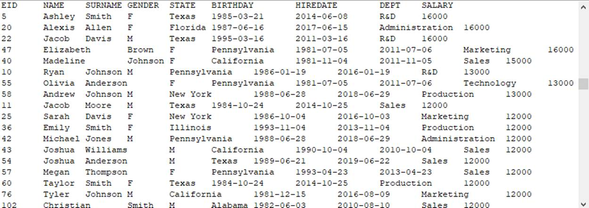
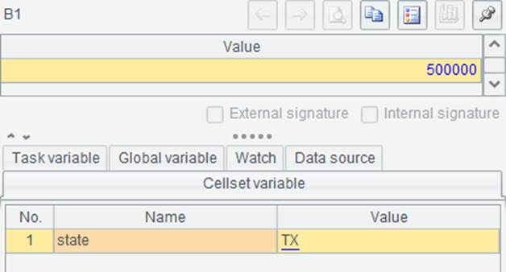
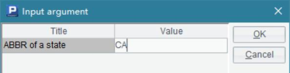

An invoked cellset file can have no return value. Take the following cellset file – outputData1.splx – as an example:
|
|
A |
|
1 |
$(demo) select * from CITIES |
|
2 |
=A1.select(Arg.pos(left(NAME,1))>0) |
|
3 |
=file("cities.txt") |
|
4 |
>A3.export@t(A2) |
The file uses the parameter Arg, of sequence string type:

A1 directly calls the demo database to query data, instead of first establishing a connection using connect statement. In this case, the autoConnect property of demo data source in raqsoftConfig.xml¡¯s database configuration should be true:
<property name="autoConnect" value="true"/>
Refer to Deploying JDBC for detailed configuration. Here¡¯s the code for calling the cellset file in Java:
// call the stored procedure; outputData1 is the name of the script file
st =con.prepareCall("call outputData1(?)");
// set the parameter
com.scudata.dm.Sequence seq = new com.scudata.dm.Sequence();
seq.add("A");
seq.add("B");
seq.add("C");
st.setObject(1, seq);
// execute the stored procedure
boolean hasResult = st.execute();
// cannot get the result set as there is no return result; hasResult is false
Note: The cellset file uses a parameter of sequence type, which can only be set by generating a Sequence object. As with this example, a sequence parameter [A,B,C] is set for writing information of cities whose initials are A, B and C to the cities.txt file. If no path has been specified for storing the output file, store it in the main path, which is specified by raqsoftConfig.xml¡¯s <mainPath/> node. The output file is as follows:

A cellset file could return multiple result sets, like createTable3.splx shows:
|
|
A |
B |
|
1 |
$(demo) select EID, NAME+' '+SURNAME FULLNAME, GENDER, STATE, BIRTHDAY from EMPLOYEE |
|
|
2 |
=A1.select(STATE == State && Age(BIRTHDAY)<age) |
|
|
3 |
=A2.select(GENDER=="F") |
=A2\A3 |
|
4 |
return A3 |
return B3 |
This cellset returns the employees who are younger than the specified age and who, at the same time, come from the specified state as two table sequences according to genders. The cellset uses two parameters, respectively specifying the oldest age and the state from which the employees come from:
This cellset file will return multiple result sets when executed.
// call the stored procedure; createTable3 is the name of the script file and ? represents the parameter
st =con.prepareCall("call createTable3(?,?)");
// set the parameters in order
st.setObject(1, 30);
st.setObject(2, "California");
// execute the stored procedure
boolean hasResult = st.execute();
// get the multiple result sets and print them out
while (hasResult) {
ResultSet rs = st.getResultSet();
// print out the results
ResultSetMetaData rsmd = rs.getMetaData();
int colCount = rsmd.getColumnCount();
for ( int c = 1; c <= colCount;c++) {
String title = rsmd.getColumnName(c);
if ( c > 1 ) {
System.out.print("\t");
}
else {
System.out.print("\n");
}
System.out.print(title);
}
while (rs.next()) {
for (int c = 1; c<= colCount; c++) {
if ( c > 1 ) {
System.out.print("\t");
}
else {
System.out.print("\n");
}
Object o = rs.getObject(c);
System.out.print(o.toString());
}
}
System.out.println();
// check if there are other return results
hasResult = st.getMoreResults();
}
When the code is executed, the female and male employees who are younger than 30 and who come from the state of California will be fetched respectively. Here¡¯s the printed out result:

In the cellset file - createTable3.splx, a single statement – return A3,B3 – can also be used to return two record sequences. Its invocation in Java is the same as the above.